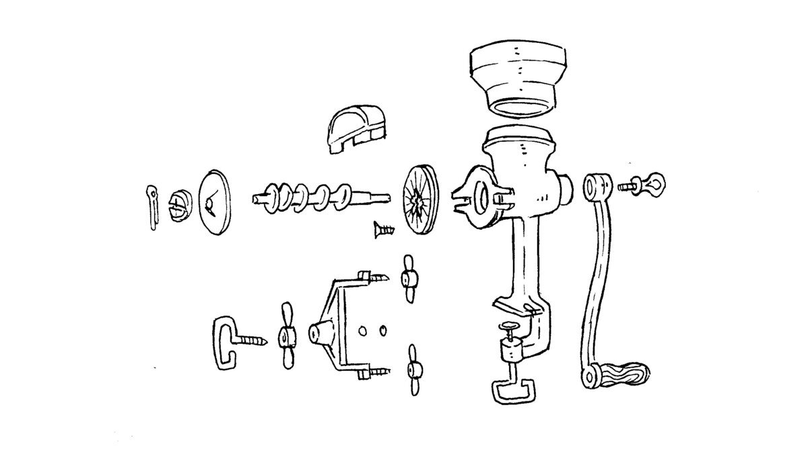

grinder

Aboard Pino we use a second hand Molino Corona mill to grind whole grains into flour. It is hand-powered, similar to a meat grinder, except that the unit is larger with metallic burrs. We've wanted one ever since we read Sailing the Farm by Kenneth Neumeyer. While in Fiji, our good friends from the sailboat Muktuk had one to grind their wheat berries to make fresh bread. We purchased ours from a nice couple in Victoria for 50$.
Whole wheat flour doesn't have a long shelf life because it still has the germ. The germ oxidizes and turn rancid. Keeping a variety of whole grains and grinding them as needed ensures that the flour is fresh when you need it, and eliminates the need to carry both the whole and ground version of the same grain or legume. For instance, we used to carry both chickpeas and chickpea flour, as well as wheat berries (for sprouting) and whole wheat flour.
Whole grains last a long, long time, provided they're stored in a dry environment. See food storage.

With a mill it's possible to grind barley, buckwheat, soy beans, chickpeas, oat, rice, dry hominy etc.
After grinding, simply dust the mill off and avoid washing it with water. Water can cause the mill to rust. If you must use water to clean the mill, disassemble the mill and dry each part thoroughly.

We also carry an old fashioned small food processor (meat grinder) on board. They're easy to find in thrift stores, and generally cost anywhere from 10-15$. It has quickly become one of our favorite galley tools.
We first decided to get one to process peanuts into peanut butter, and to grind sprouts or various vegetables. They are small, easy to take apart and clean, but the metal discs should be coated with vegetable oil after every use, otherwise they will rust.
We also like to use a simple potato masher to make hummus, cooked beans are easy to squish by hand.